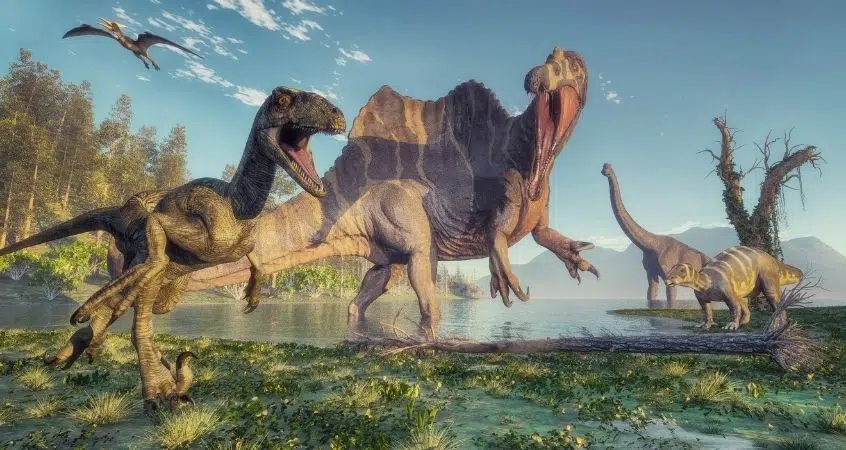

dino info
Why are they chasing me?
Look how big its teeth are
Help me!
ahhhhhhhhh
Dinosaurs are undeniably cool—there’s something magnetic about creatures that roamed the earth millions of
years before humans ever appeared. They were massive, diverse, and surprisingly complex. Some thundered across
ancient plains on pillar-like legs, others darted through forests with the agility of birds, and some even sported
vibrant feathers. Their bones tell this is a span
stories of ecosystems that feel both
alien and familiar, and every fossil
discovery adds a new layer to the mystery. Just imagining a world where creatures like Stegosaurus, Triceratops, and
the towering Brachiosaurus were part of everyday life is enough to spark awe.
But dinosaurs were also genuinely scary. Many of them were apex predators with razor-sharp teeth, powerful
jaws, and senses tuned for hunting. The idea of a Velociraptor pack coordinating an attack, or a Tyrannosaurus rex
barreling forward with the force of a moving truck, can send a shiver down anyone’s spine. Even the plant-eaters
could be intimidating—picture a herd of armored Ankylosaurs swinging clubbed tails with bone-crushing force. Their
sheer size, speed, and defensive adaptations remind us that the ancient world was not gentle.
Scary things about dinosaurs:
What makes dinosaurs so fascinating is the combination of that wonder and fear. They were
both majestic and
monstrous, peaceful and perilous. Their world challenges our imaginations, inviting us to picture landscapes
filled
with colossal creatures and constant survival. Dinosaurs let us tap into a kind of childhood excitement—where
the
impossible feels real—and at the same time remind us how small we are in the vast timeline of life on Earth.
Movies about dinosaurs:
- Jurassic Park
- Land Before Time
- Dinosaur
- The Good Dinosaur
heres an image of dinosaurs!
